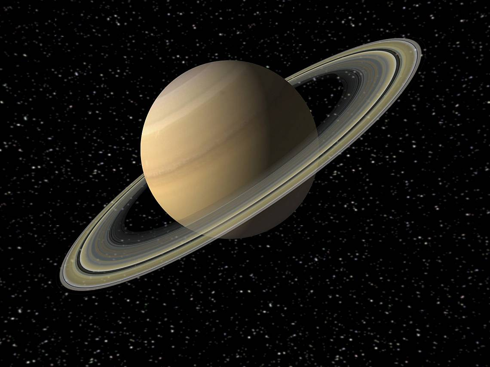

Saturn is the sixth planet from the Sun and the second-largest planet in our solar system.
Adorned with thousands of beautiful ringlets, Saturn is unique among the planets. It is not the only
planet to have rings – made of chunks of ice and rock – but none are as spectacular or as
complicated as Saturn's.
Like fellow gas giant Jupiter, Saturn is a massive ball made mostly of hydrogen and helium.
Namesake
The farthest planet from Earth discovered by the unaided human eye, Saturn has been known since
ancient times. The planet is named for the Roman god of agriculture and wealth, who was also the
father of Jupiter.
Potential for Life
Saturn's environment is not conducive to life as we know it. The temperatures, pressures, and
materials that characterize this planet are most likely too extreme and volatile for organisms to
adapt to.
While planet Saturn is an unlikely place for living things to take hold, the same is not true of
some of its many moons. Satellites like Enceladus and Titan, home to internal oceans, could possibly
support life.
Size and Distance
With a radius of 36,183.7 miles (58,232 kilometers), Saturn is 9 times wider than Earth. If Earth
were the size of a nickel, Saturn would be about as big as a volleyball.
From an average distance of 886 million miles (1.4 billion kilometers), Saturn is 9.5 astronomical
units away from the Sun. One astronomical unit (abbreviated as AU), is the distance from the Sun to
Earth. From this distance, it takes sunlight 80 minutes to travel from the Sun to Saturn.

Orbit and Rotation
Saturn has the second-shortest day in the solar system. One day on Saturn takes only 10.7 hours (the
time it takes for Saturn to rotate or spin around once), and Saturn makes a complete orbit around
the Sun (a year in Saturnian time) in about 29.4 Earth years (10,756 Earth days).
Its axis is tilted by 26.73 degrees with respect to its orbit around the Sun, which is similar to
Earth's 23.5-degree tilt. This means that, like Earth, Saturn experiences seasons.
Moons
Saturn is home to a vast array of intriguing and unique worlds. From the haze-shrouded surface of
Titan to crater-riddled Phoebe, each of Saturn's moons tells another piece of the story surrounding
the Saturn system. Currently, Saturn has 53 confirmed moons with 29 additional provisional moons
awaiting confirmation.